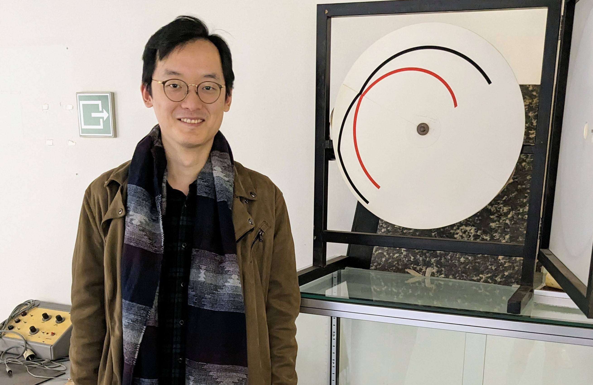

(Next to me is Albert Michotte's original apparatus for his pioneering studies on causality. Leuven, Belgium.)
The Double Ring Illusion (3rd place in the Best Illusion of the Year Contest 2021 by the Neural Correlate Society.) [html demo]
Bai, D., & Strickland, B. (2023). The Pulfrich solidity illusion: A surprising demonstration of the visual system’s tolerance of solidity violations.
Psychonomic Bulletin & Review. 30, 1782–1787. https://doi.org/10.3758/s13423-023-02271-9.
[PDF]
[Demo]
Bai, D., & Strickland, B. (2023b). Solid as a rock: Solidity shapes the perception of object motion.
PsyArXiv Preprint. https://doi.org/10.31234/osf.io/2pzmh.
[PDF]
[Demo]
I recently received my Ph.D from the Ecole Normale Supérieure (Paris, France), where I worked with Brent Strickland.
Email: dawei.bai [at] hotmail.com.
(I believe that my website should not look better than my science.
So this website will look better once I have done more science!)